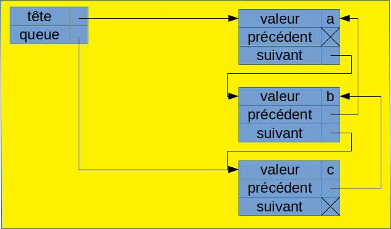
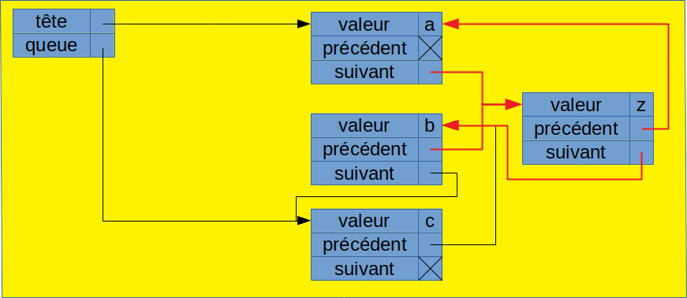

Listes
I. Définition
A. Définition formelle
La structure de liste est une structure que vous connaissez a priori bien de manière intuitive : une liste est une structure linéaire de données indicées à partir de 0. Il est possible d'ajouter et supprimer des élements à une liste.
Voici la définition classiquement retenue pour la structure de liste sous la forme de type abstrait algébrique :
Nom : Liste
Constructeurs listeVide: Listeadjq: Element x Liste → Liste
Opérateurs dernier : Liste → Element dernier(adjq(e, L)) = e debut: Liste → Liste debut(adjq(e, L)) = L supprDernier: Liste → Liste supprDernier(adjq(e, L)) = L taille : Liste → Naturel taille(listeVide) = 0 taille(adjq(e, L)) = 1 + taille(L) get : Naturel x Liste -> Liste get(taille(l), adjq(e,l)) = e get(i, adjq(e,l)) = get(i, l) ∀ i ∈ [0, taille(l)[
le constructeur adjq désigne l'adjonction en queue.
N.B : L'opérateur get aurait également pu être défini ainsi :
get : Naturel x Liste -> Liste
get(taille(l)-1, l) = dernier(l)
get(taille(l)-1-i, l) = get(taille(l)-1-i, debut(l))
Souvent, d'autres opérateurs sont proposées sur les listes, mais nous ne listons ici que les opérateurs fondamentaux.
B. Intuition de la correction
La liste ['a', 'b', 'c'] est construite ainsi :
adjq('c', adjq('b', adjq('a', listeVide)))
| [a] |
| [a, b] |
| [a, b, c] |
1. Application de dernier à la liste ['a', 'b', 'c']
dernier(adjq('c', adjq('b', adjq('a', listeVide)))) = 'c'
2. Application de debut à la liste ['a', 'b', 'c']
debut(adjq('c', adjq('b', adjq('a', listeVide)))) = adjq('b', adjq('a', listeVide))
≈ ['a', 'b']
3. Application de taille à la liste ['a', 'b', 'c']
taille(adjq('c', adjq('b', adjq('a', listeVide)))) = 1 + taille(adjq('b', adjq('a', listeVide)))
= 1 + 1 + taille(adjq('a', listeVide))
= 1 + 1 + 1 + taille(listeVide)
= 3
3. Application de get à la liste ['a', 'b', 'c', 'd']
get(1, adjq('d', adjq('c', adjq('b', adjq('a', listeVide))))) = get(1,adjq('c', adjq('b', adjq('a', listeVide))))
= get(1, adjq('b', adjq('a', listeVide)))
= 'b'
II. les implantations de la notion de liste
Dans les langages impératifs, il existe souvent 2 grands types d'implantation de la notion de liste : les tableaux dynamiques et les listes chaînées. Nous allons donner les grands principes de ces 2 types d'implantation.
A. Tableau Dynamique
Un tableau en informatique est en général représenté par une suite de "cases" de mêmes tailles contenant les différents éléments du tableau. Cette représentation présente 2 avantages :
- Pour un tableau sans case vide, elle est très compacte, puisqu'elle se contente de stocker les données ;
- L'accès un élément quelconque du tableau par son indice s'effectue en temps constant, et relativement rapidement. En effet l'adresse de l'élément en question se calcule facilement ainsi :
adresseElement = adresseTableau + indiceElement * tailleCase
Un tableau a cependant a priori une taille fixe, ce qui n'est pas adéquat pour représenter une liste. Aussi, la notion de tableau dynamique a été développée : un tableau dynamique est un tableau dont la taille peut varier. Ainsi, si on a besoin d'ajouter un élément à un tableau, on crée un nouveau tableau plus grand, on copie les éléments de l'ancien tableau dans le nouveau, on ajoute le nouvel élément à la fin, on remplace l'ancien tableau par le nouveau, et enfin on supprime l'ancien tableau. Même si la copie de zones mémoires est une tâche plutôt rapide, ce travail peut devenir chronophage si on rajoute fréquemment des éléments. Aussi, en général, on rajoute plusieurs cases d'un coup, et on garde en mémoire la dernière case remplie
Les tableaux dynamiques ne sont par contre pas du tout efficace si l'on doit insérer ou supprimer un élément en plein milieu du tableau, puisqu'il faut alors systématiquement recopier le tableau par morceaux dans un tableau plus grand ou plus petit en les décalant selon l'opération effectuée. C'est la raison pour laquelle ont été créées les listes chaînées.
B. Listes chaînées
Dans une liste chaînée, chaque élément de la liste est stocké dans une cellule, que l'on peut voir comme un tuple contenant :
- l'élément ;
- un pointeur (ou une référence) sur la cellule suivante ;
- éventuellement (pour les listes doublement chaînées), un pointeur sur la cellule précédente.
Un petite schéma valant mieux qu'un long discours, voilà ce que ça donne pour représenter la liste ['a', 'b', 'c'] :

Cette structure rend les insertions très rapides : l'insertion d'un élément dans la liste requiert juste la modification de 4 pointeurs. Voici par exemple comment insérer l'élément 'z' à l'indice 1 :

La structure de liste chaînée présente par contre 2 inconvénients :
- elle prend beaucoup de place, puisqu'il faut rajouter 1 à 2 pointeurs pour chaque élément :
- l'accès à un élément est relativement long et est proportionnel à l'indice de l'élément, puisqu'il faut parcourir la liste depuis le début (ou la fin) pour atteindre l'élément voulu.
III. Les listes en Python
Le langage Python propose de base la notion de tableau dynamique, qui est donc classiquement utilisée comme implantation de la structure de liste, avec tous les opérateurs de base :
- Constructeur de liste vide : []
- ajout en queue : [1, 2, 3].append(4)
- dernier : [1, 2, 3][-1]
- début : [1, 2, 3][:-1]
- taille : len([1, 2, 3])
- get : [1, 2, 3][1]
Mais les tableaux dynamiques de Python proposent bien d'autres opérateurs : extraction d'une sous-liste, remplacement d'un élément, tri, retournement, effacement, suppression d'un élément, filtrage, application d'un fonction, réduction, union, intersion, différence, ...
IV. Algorithmes classiques sur les listes
Les données stockées dans les listes peuvent être triées ou non. Il y a bien sûr un coût supplémentaire lors de l'insertion à garder les données triées, mais la recherche d'une donnée est bien plus rapide lorsque la liste est triée. Certaines fois, on n'a pas d'autre choix que de fonctionner sur une liste non triée. Voici notamment 2 cas :
- Il n'y a pas de relation d'ordre existant sur les données de la liste ;
- La liste est triée sur un critère qui n'est pas celui sur lequel est effectuée la recherche.
Nous allons donc étudier les algorithmes sur les listes en distinguant 2 cas : suivant que la liste est triée ou non.
A. Recherche d'un élément
1. Liste non triée
Quand on recherche un élément dans une liste non triée, il n'y a pas d'autre solution que de parcourir toute la liste jusqu'à tomber sur l'élément en question. Si on atteint la fin de la liste sans avoir trouvé l'élément recherché, c'est qu'il n'est pas présent.
def recherche(liste, element):
for courant in liste:
if courant == element:
return True
return False
En moyenne, il faudra donc n/2 étapes pour trouver un élément présent dans la liste.
2. Recherche dans une liste triée
Le parcours itératif proposé ci-dessus pourrait être optimisé dans le cas d'uen liste triée, puisque si la valeur courante dans la liste est supérieure à la valeur recherchée, on est certain que poursuivre la recherche est inutile.
Cependant, dans le cas où la liste est implantée par un tableau dynamique, avec un coût fixe d'accès aux éléments, il est préférable de procéder en utilisant une recherche par dichotomie.
La recherche pas dichotomie consiste à maintenir consiste, dans une liste ordonnée, à maintenir un intervalle des possibles et, en recherchant en son milieu, à diviser l'intervalle des possibles en 2 pour optimiser, en moyenne, le temps de recherche.
Ainsi, si on recherche un élément dans un liste de 101 éléments, on commence par rechercher l'élément à l'indice 50. S'il n'y est pas, selon que l'élément à rechercher et inférieur à celui de l'indice 50 ou pas, on recommencera en considérant les 50 éléments allant des indices 0 à 49, ou bien ceux allant des indices 51 à 100, et ainsi de suite. Comme on divise l'espace des possibles en 2 à chaque itération, si notre liste contient n élément, la recherche aboutira en moyenne à log2(n) étapes.
Voici une implantation de la recherche par dichotomie :
def rechercheDicho(liste, element):
if len(liste) == 0:
return False
indiceMilieu = len(liste) // 2
if liste[indiceMilieu] == element:
return True
if liste[indiceMilieu] < element:
return rechercheDicho(liste[indiceMilieu+1:], element)
else:
return rechercheDicho(liste[:indiceMilieu], element)
B. Maximum d'une liste
Dans le cas d'une liste triée, chercher l'élément maximal n'est pas compliqué : il suffit de prendre le dernier. Nous ne présenterons donc que la recherche de l'élément maximum d'une liste non triée.
Pour retrouver l'élément maximal, on itère sur les éléments de la liste en stockant dans une variable l'élément le plus grand rencontré jusqu'à présent. Mais encore faut-il trouver une valeur pertinente d'initialisation de cette variable. S'il s'agit d'une liste de naturels, on pourrait très bien initialiser cette variable à 0. Mais dans le cas général ? Y a-t-il toujours une valeur minimale à laquelle initialiser cette variable ? Une solution qui marche systématiquement est de prendre un élément quelconque de la liste pour valeur initiale (le premier est un exemple de solution). Du coup, il suffit de parcourir la liste à partir du deuxième élément. L'algorithme de recherche de l'élément maximum est alors le suivant :
def maximum(liste):
maximumActuel = liste[0]
for valeur in liste[1:]:
if valeur > maximumActuel:
maximumActuel = valeur
return maximumActuel
Bien sûr, la recherche de l'élément minimal fonctionne selon le même principe ; il suffit juste de remplacer le "<" par un ">".
C. ArgMax
De nombreux algorithmes n'ont pas besoin de retrouver l'élément maximal, mais son indice. C'est ce qu'on appelle en général la fonction argMax. Elle fonctionne de manière similaire à la fonction maximum, sauf qu'il faut également mémoriser l'indice de l'élément maximum, et que c'est cet indice qu'il faut renvoyer :
def maximum(liste):
maximumActuel = liste[0]
indiceMaximum = 0
indice = 1
for valeur in liste[1:]:
if valeur > maximumActuel:
maximumActuel = valeur
indiceMaximum = indice
indice = indice + 1
return indiceMaximum
D. Somme et moyenne des éléments d'une liste
Même si la méthode reduce permet de faire cela plus facilement, il peut être intéressant d'étudier comment calculer la somme des éléments d'une liste. Le calcul de la moyenne va alors de soi.
def somme(liste):
somme = 0
for valeur in liste:
somme = somme + valeur
return somme
def moyenne(liste):
somme = 0
for valeur in liste:
somme = somme + valeur
return somme/len(liste)
E. Retournement d'une liste
Cet algorithme peut être envisagé de 2 façons : en générant une nouvelle liste, ou bien en retournant directement la liste. Bien sûr, la méthode reverse peut aussi être utilisée... Voici les 2 versions :
def retournement1(liste):
listeRetournee = []
for element in liste:
listeRetournee = [element] + listeRetournee
return listeRetournee
def retournement2(liste):
taille = len(liste)
for i in range(taille // 2):
liste[i], liste[taille-i-1] = liste[taille-i-1], liste[i]
F. Tri d'une liste
Il existe un nombre important d'algorithmes de tri. Voici les noms de quelques uns des plus connus :
- tri à bulle
- tri par insertion
- tri rapide
- tri fusion
- tri par tas
- tri par sélection
- tri Shell
Le choix d'un algorithme de tri ou d'un autre est notamment guidé par les complexités en temps et en espace des algorithmes. À ce titre, les algorithmes les plus utilisés sont le tri rapide et le tri par tas. Cependant, pour manipuler les listes avec aisance, s'essayer à l'implantation des autres algorithmes n'est pas dénué d'intérêt.
1. Tri à bulle
Le tri à bulle est particulièrement peu efficace en temps, mais il est très simple à comprendre : on parcourt le tableau en permutant tout couples d'éléments adjacents mal rangés. Tant que ce parcours à engendré au moins une permutation, on recommence. À la i-ème itération on est sûr que les i plus grands éléments sont à la fin du tableau. Ici, l'algorithme modifie directement la liste passée en paramètre :
def triABulle(liste):
permutation = True
numeroIteration = 1
while(permutation):
permutation = False
for i in range(len(liste) - numeroIteration):
if liste[i] > liste[i+1]:
liste[i], liste[i+1] = liste[i+1], liste[i]
permutation = True
2. Tri rapide
Le tri rapide est très efficace en moyenne, mais peut être très lent dans le pire des cas. Sa complexité en espace dépend de son implantation : il existe une version très efficace (complexité = 1), mais la version naïve, récursive, est bien moins efficace. Elle est par contre bien plus facile à écrire et à comprendre. C'est donc celle-ci qui est donnée ici. Le principe du tri rapide est le suivant : on choisit un élément (appelé pivot) au hasard dans la liste (le choix aléatoire améliore l'efficacité en moyenne mais souvent, on prend le premier élément), on sépare les éléments de la liste en 2 sous-listes : les plus petits et les plus grands, on tri ces 2 sous-listes, puis on concatène le résultat des tris en n'oubliant pas le pivot au milieu. Ici, l'algorithme ne trie pas la liste initiale, mais génère une nouvelle liste :
def separer(pivot, liste):
petits = []
grands = []
for element in liste:
if element < pivot:
petits.append(element)
else:
grands.append(element)
return (petits, grands)
def triRapideRecursif(liste):
if len(liste) < 2:
return liste
pivot = liste[0]
(petits, grands) = separer(pivot, liste[1:])
petitsTries = triRapideRecursif(petits)
grandsTries = triRapideRecursif(grands)
return petitsTries + [pivot] + grandsTries
G. Ré-implanter des fonctions existantes
Exercice 1 : Donnez votre propre implantation de la fonction filter
N.B. : La fonction filter est une fonction qui prend un prédicat (fonction à valeur booléenne) p et une liste len paramètres, et qui renvoie un itérable représentant la liste des éléments de l pour lesquels p(l) est vrai. Exemple :
list(filter(lambda x: x % 2 == 0, [1,2,3,4,5])) [2, 4]
Euh... J'ai un peu la flemme, sur ce coup-là...
Exercice 2 : Donnez votre propre implantation de la fonction map
N.B. : La fonction map est une fonction qui prend une fonction f et une liste l en paramètres, et qui renvoie un itérable représentant la liste des éléments obtenus en appliquant f à chacun des éléments de l. Exemple :
list(map(len, ["que","j","aime","à", "faire", "apprendre"])) [3, 1, 4, 1, 5, 9]
Non, en fait, J'ai vraiment une grosse flemme !